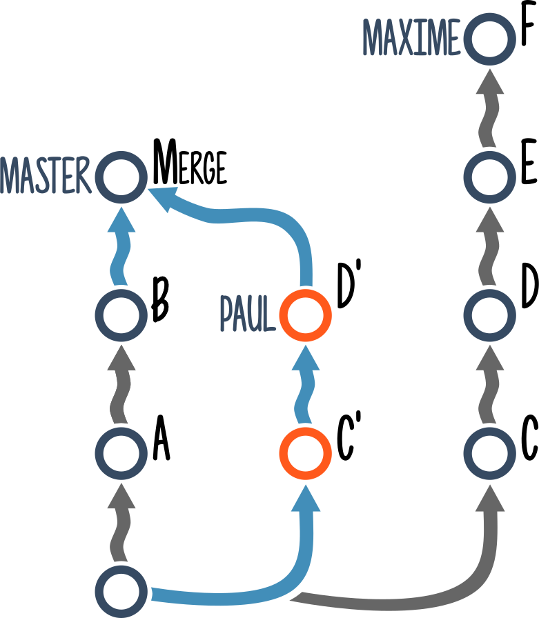

Git Dammit!
 @mghignet
@mghignet
J'ai besoin de modifier mon dernier commit.
- git add, puis...
-
# Le contenu et le nom git commit --amend -
# Le contenu seulement git commit --amend --no-edit


-
# Bien entendu il faudra « force push » git push -f origin ma-branche
-
Celui que je dois modifier n'est pas le dernier...

-
# 1. Je fais un commit de fixup git commit --fixup A 
-
# 2. Je rebase git rebase -i A~ --autosquash -


-
# Encore une fois... git push -f origin ma-branche
-
# A placer dans mon fichier d'alias function gfixup() { SHA=$(git rev-parse $1) \ && git commit --fixup $SHA \ && git rebase -i --autosquash $SHA~ } # Utilisation : gfixup {sha1} -
# Ou un alias git dans mon .gitconfig [alias] fixup = !sh -c 'SHA=$(git rev-parse $1) \ && git commit --fixup $SHA \ && git rebase -i --autosquash $SHA~' - # Utilisation : git fixup {sha1}
Oups, J'ai modifié mes commits, et puis j'ai fait un pull.
Je me retrouve avec des commits en double :(


-
Que s'est-il passé ?
-


-
Aïe…
-


-
# Il fallait « force push »… git push -f origin ma-branche
Je veux supprimer mon dernier commit.


-
# On garde les modifs, indexées git reset HEAD~ --soft -
# On garde toujours les modifs mais non indexées git reset HEAD~ --mixed git reset HEAD~ -
# On supprime toutes les modifs git reset HEAD~ --hard
Je veux abandonner mes modifications…
…et revenir à la version du repository distant.

Pull ? Fetch ?

-
git pull origin master -
git fetch origin master git merge master
-
git fetch origin ma-branche git reset --hard origin/ma-branche
-
# A placer dans le .gitconfig [alias] dammit = !BRANCH=$(git rev-parse --abbrev-ref HEAD) \ && git fetch origin $BRANCH \ && git reset --hard origin/$BRANCH # Utilisation : git dammit
Comment voir les modifications en cours ?
-
# Modifications non indexées git diff -
# Modifications indexées git diff --cached git diff --staged -
# Toutes les modifications git diff HEAD -
# Les modifications entre deux commits / branches git diff ab0f..89df git diff ab0f..master git diff ab0f..HEAD
Je veux séparer les modifications d'un même fichier dans deux commits différents.
-
# pour indexer des modifications git add -p -
# Dans l'autre sens git reset -p
Je veux revenir sur la branche sur laquelle j'étais juste avant.
-
# Comme "cd -" en shell ! git checkout -
Je veux annuler les modifications faites sur un fichier en particulier.
-
# Cette méthode a des défauts... git checkout monFichier.ext -
# Tout ce qui suit le "--" est considéré comme un nom de fichier git checkout -- monFichier.ext
Je me suis basé sur une autre branche que master pour développer ma feature
Je n'avais pas le choix…


- 

-
# On n'oublie pas le ~ tilde ~ ! git rebase E~ --onto master
Questions ?
Merci !
mghignet.github.io/git-dammit-talk/
@mghignet